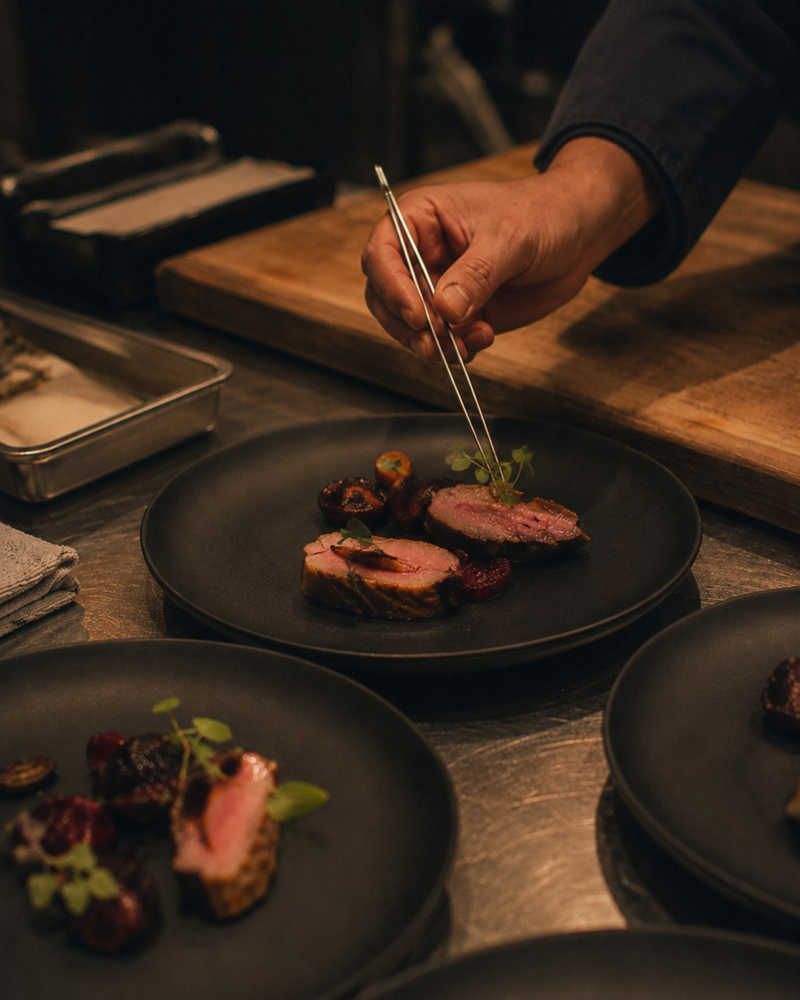
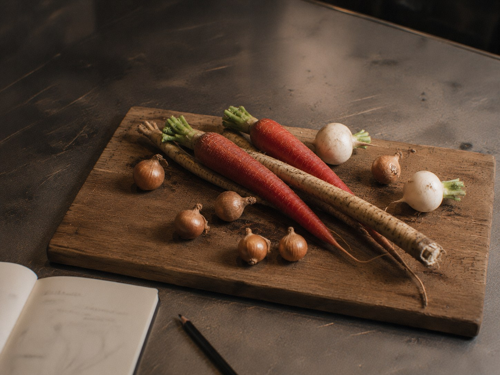
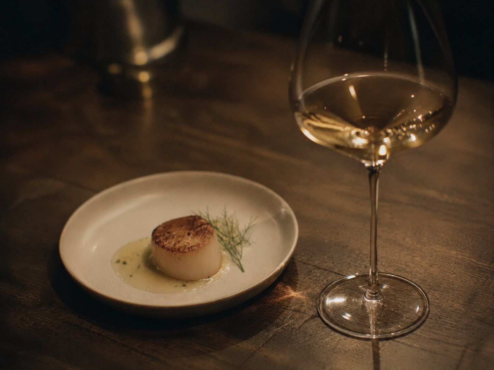
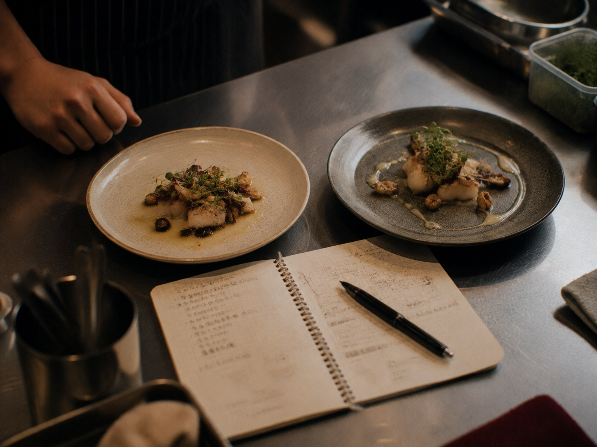

Overview
美味しさと利益、
両方をあきらめない。
こだわって作ったのに利益が出ない、季節感を出したいけれど手が回らない。 そんなお悩みに、原価計算から味づくりまで一気通貫でお応えします。
お店の看板メニューとなる一皿から、季節限定メニュー、 そしてワインとの組み合わせまで。現場で無理なく再現できることを前提に、 売上に直結するメニューを設計します。

匠
Menu
01
季節メニューの企画・開発
旬の食材やトレンドを取り入れながら、お店のコンセプトに合った 季節メニューを企画します。試作を重ね、現場のオペレーションに 落とし込めるレシピまで仕上げます。

02
原価設計・コスト管理
「美味しい」だけでは経営が続きません。原価率と提供価格のバランスを 数値で可視化し、利益の残るメニュー構成へと組み立て直します。
03
ワインペアリングの提案
ソムリエ・エクセレンスの知見を活かし、料理に寄り添う一杯を提案します。 ドリンクメニューを強化することで、客単価アップにもつなげます。

04
試作・ブラッシュアップ伴走
机上のレシピで終わらせず、実際の厨房での再現性やオペレーション負荷を 確認しながら、完成まで一緒に伴走します。

新しいメニューで、お店に新しい風を。
単発のメニュー相談から、シーズンごとの継続的な開発サポートまで対応します。